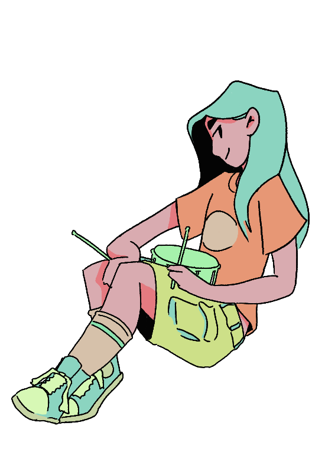
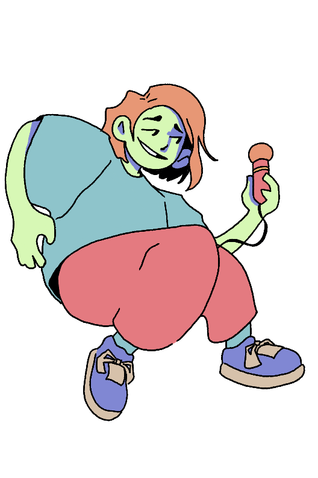
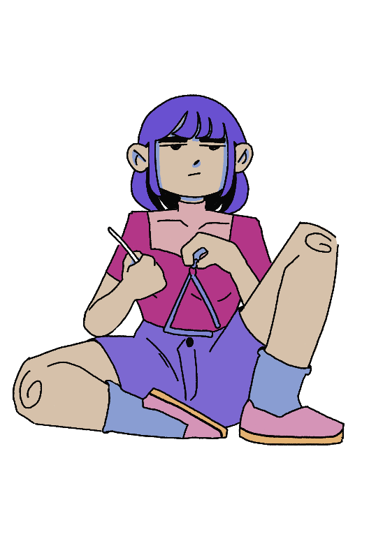

Experiment 4 - Images, Video, and Sound Art
Imitate
I was inspired by the following pieces: - Wes Modes’s Experiment with Historic Photos. - Nagilto’s ambientsounds_work - Che-Yu Wu’s Test play sound - Joe DeNavas “What do you mean you can time travel??” From this selection of work, I felt as though I had a good starting point
Integrate
I had 3 clear goals from the beginning that I wanted to accomplish.
  
From here I tried to make wes's historical figure code work for my purposes. I had to rework a lot of the way the code called images. To instead of responding continuously, it was after a click.
Innovate
My Innovations were few and far between. I reworked a lot of the historical figures code. This allowed me to cycle through the images differently. I would move an still image up until a point on the z axis and then I would switch to the gif and start to do some if checks to play the related sound. I feel as though I used to many global variables but it is what it is. In the end I didn't get it to where I wanted to, but I certainly did try with what time I had available.
Reflection
What part of the project you contributed
I created the project! Aside from some AI help with ChatGPT, I was the sole programmer.
A reflection on your work and the work of the team
For sure my least impressive work yet. I didn't have too much time this week to put into this experiment so it was all pretty rushed. But hey! I drew some cute bands girls.
Brief highs and lows
Biggest high was when I finally took the time to write my thoughts on a whiteboard and think about what I was doing, I was able to
place the girls in the correct locations and set up the movement pretty easily.
On the other hand, I struggled a lot to get to those points of focus on this project. My biggest low was by far getting the sound to stop playing.
It's such a low that I never quite figured out a good way to do it before the deadline :/